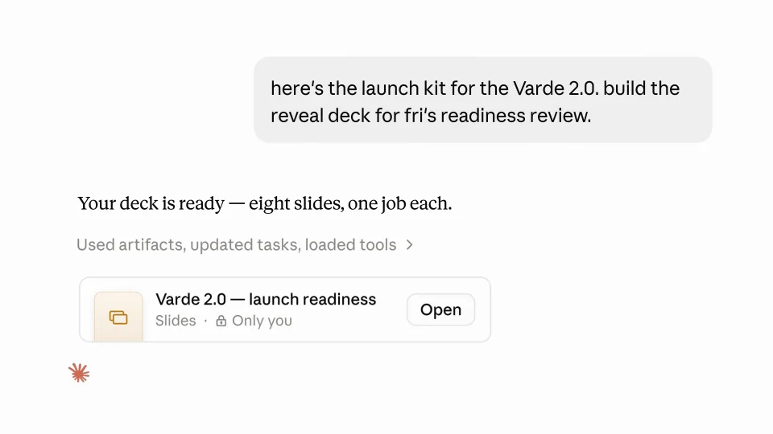
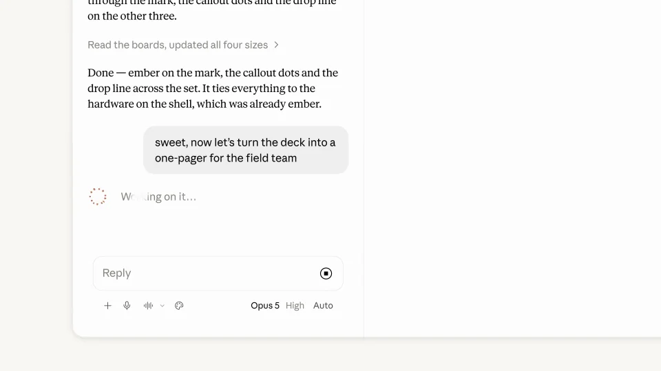
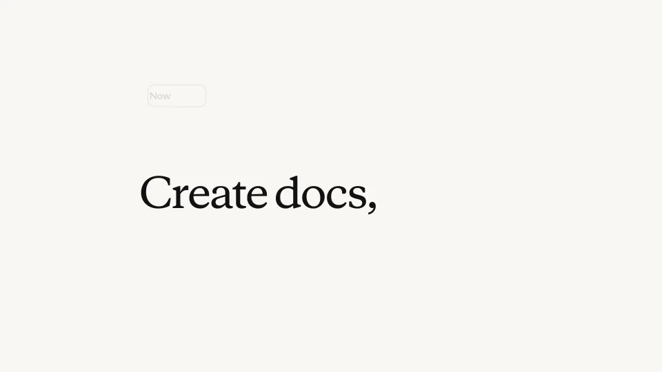
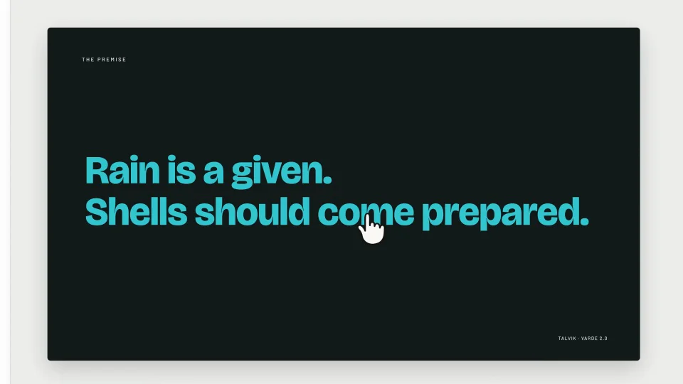
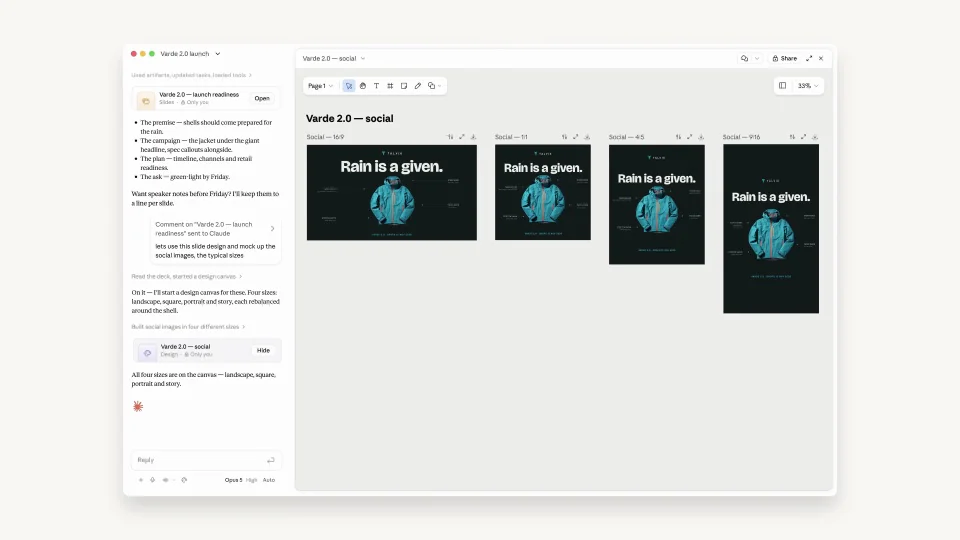
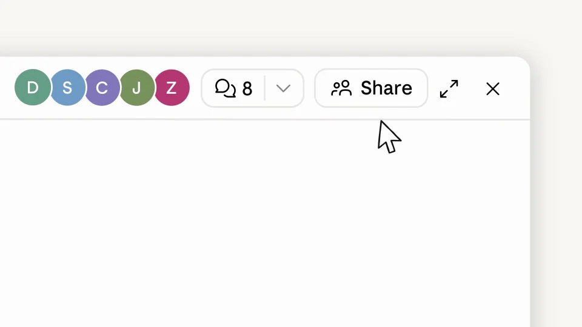

Anthropic / V268
Claude — decks, docs, and designs in chat
选定一个产品主题，让同一批内容依次成为幻灯片、不同画幅的海报和文档。
构图与编排 可播放 · 可替换内容
整体编排规则示例
查看 HTML 源码
<!doctype html><html lang="zh-CN"><meta charset="utf-8"><meta name="viewport" content="width=device-width,initial-scale=1"><title>Claude — decks, docs, and designs in chat · sequence</title><style>html,body{margin:0;width:100%;height:100%;overflow:hidden;background:#f8f7f1}canvas{display:block;width:100%;height:100%;object-fit:contain}</style><body data-mode="sequence"><canvas width="1000" height="600"></canvas><script src="data.js"></script><script src="common.js"></script><script src="scene.js"></script><script src="bridge.js"></script></body></html>画面元素对话输入原始资料幻灯片评论锚点多画幅海报文档
MOTION LANGUAGE
动作与构图
局部动作 · 构图规则
01
先确定跨格式共用的内容

产品图、主标题和主题色贯穿全部成果。暖白界面作为容器，深青设计稿承担视觉重点；说明文字用衬线，编辑控件用清楚的无衬线。
02
从资料走到第一份幻灯片
从资料走到第一份幻灯片规则示例
查看 HTML 源码
<!doctype html><html lang="zh-CN"><meta charset="utf-8"><meta name="viewport" content="width=device-width,initial-scale=1"><title>Claude — decks, docs, and designs in chat · sequence</title><style>html,body{margin:0;width:100%;height:100%;overflow:hidden;background:#f8f7f1}canvas{display:block;width:100%;height:100%;object-fit:contain}</style><body data-mode="clip" data-start="4" data-end="33"><canvas width="1000" height="600"></canvas><script src="data.js"></script><script src="common.js"></script><script src="scene.js"></script><script src="bridge.js"></script></body></html>先放请求和资料，再打开生成的幻灯片。镜头靠近当前编辑区，选中文字后才出现工具条，让修改发生在明确对象上。
03
用评论提出下一种格式
用评论提出下一种格式规则示例
查看 HTML 源码
<!doctype html><html lang="zh-CN"><meta charset="utf-8"><meta name="viewport" content="width=device-width,initial-scale=1"><title>Claude — decks, docs, and designs in chat · sequence</title><style>html,body{margin:0;width:100%;height:100%;overflow:hidden;background:#f8f7f1}canvas{display:block;width:100%;height:100%;object-fit:contain}</style><body data-mode="clip" data-start="33" data-end="59"><canvas width="1000" height="600"></canvas><script src="data.js"></script><script src="common.js"></script><script src="scene.js"></script><script src="bridge.js"></script></body></html>把评论锚在当前设计上，提出派生要求后展开多个尺寸。竖版、方版和横版重新安排文案与图片，保持同一主题的轮廓与配色。
04
转成文档后，改变阅读方式

进入文档时降低画面装饰，增加正文和数据图的篇幅。图表承接前面的产品内容，分享入口放在成果完整之后。
05
整条片子的格式递进
每个格式先给全貌，再看局部修改，最后回到成果集。让观众先认出“是什么”，再看“改了哪里”。
06
换主题需要准备什么
提供一套产品素材、主文案和核心数据。可以更换品牌与图形语言；派生版的标题、重点信息和产品身份要保持一致。
SEQUENCE
段落与节奏
点击段落，定位到上方编排示意。




画面参考 · 离散静帧
KEEP THE RELATIONSHIPS
制作其他主题
- 替换产品与素材，保持一个主题跨多格式的复用关系。
- 派生版保持同一重点文案、素材与配色，画幅变化要重新排版。
制作约束
对话输入 / 原始资料 / 幻灯片 / 评论锚点 / 多画幅海报 / 文档
- 同一夹克主题从幻灯片派生多尺寸设计，再转为文档，内容身份跨格式保留。
- 先点击选中文字再出现工具条，评论绑定局部目标。
- 各格式展示由全局到局部再返回成果集。